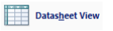

F I Ş A Nr. 1
- Crearea unei baze de date pornind de la zero
- Orice coloană dintr-un tabel se numeşte field(câmp);
- Orice linie dintr-un tabel se numeşte record (înregistrare);
- Intersecţia dintre o linie şi o coloană se numeşte value(valoare).
- Cea mai importantă linie dintr-un tabel este acea linie care defineşte tabelul. Ea se numeşte cap de tabel (sau structura de bază). Acesta este primul lucru pe care îl creăm atunci când vrem să facem un tabel.
- Capul de tabel conţine definiţia coloanelor din tabelul respectiv
- Crearea unui tabel
- ID_CLIENT coloană de tip AutoNumber (Numerotare automată 1,2,3,…..)
- Nume, coloană de tip Text ;
- Oras, coloană de tip Text ;
- Salariu, coloană de tip Number (Număr)
1. O să începem să creăm o bază de date nouă. Deschidem aplicaţia Microsoft Access 2007:
Dăm dublu clic pe pictograma sau START programs…….
O să alegem BlankDatabase.  Putem de asemenea să începem de la
un anumit şablon (template) de bază de date, deja disponibil. Dăm un nume acestei baze
de date, de exemplu FIRMA.accdb.
Putem de asemenea să începem de la
un anumit şablon (template) de bază de date, deja disponibil. Dăm un nume acestei baze
de date, de exemplu FIRMA.accdb.
Observaţi că şi extensia acestei baze de date s-a schimbat. Apăsăm Create, şi în
acest moment putem să creăm componentele unei baze de date.
Observaţi că interfaţa Access porneşte deja cu un tabel nou.
O să stabilim câteva repere pentru a fi mai uşor de înţeles următoarele lecţii:
2. Vom crea un prim tabel numit Clienti. Observaţi că imediat după ce am început să creăm baza de date, Access se aşteaptă să creăm capul de tabel. Există două moduri de vizualizare ale unui tabel (din ribbon-ul contextual
|
Datasheet> Views): DatasheetViews, ce ne permite să creăm structura tabelului şi să introducem datele în acelaşi timp, şi |
Design Views. .
.
În momentul în care alegem să creăm un tabel în
Design Views, . va cere imediat să
introducem numele acestuia. Completăm numele Clienti şi dăm OK.
Completăm coloanele tabelului, specificând tipul de date pentru fiecare coloană în parte, astfel:
În acest moment putem vizualiza tabelul în modul Datasheet View
(ribon-ul contextual Datasheet>Views) pentru a putea introduce înregistrările.
-
Apăsați YES dacă Access vă cere să salvați datele.
Navigarea de la o valoare la alta se poate face apăsând tasta Tab